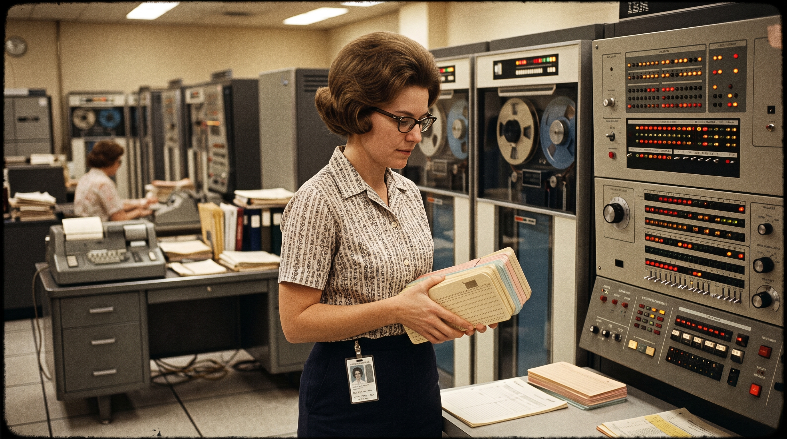

Stage 1: 1940s–60s
Hand It Over
You wrote out everything in advance, punched it into cards, and handed it to an operator. Hours or days later, you got an answer. One typo meant starting over. The machine set the pace, and you waited.